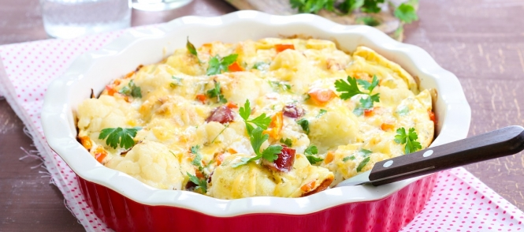

Recept Italiaanse Bloemkoolschotel
- Ik heb gekozen voor het recept van Italiaanse Bloemkoolschotel, omdat ik het een mooi maar ook makkelijk recept vind.
- Het gerecht komt uit Nederland alleen het word op een Italiaanse wijze bereid en daarom is het een Italiaanse Bloemkoolschotel.
Bereidingstijd en hoeveelheid personen:
Het maken van dit gerecht kost 20 a 30 min de ingrediënten hieronder zijn voor vier personen.
Ingrediënten:
- 700 gram aardappelen.
- Kleine bloemkool.
- 3dl melk.
- 70 gram boter.
- 70 gram bloem.
- Zout,peper en nootmuskaat.
- 2 thee lepels tijm.
- 2 eiren.
- 100 gram rauwe ham (liefst Parmaham).
- 50 gram geraspte Parmezaanse kaas.
Voorbereiding(stappenplan):
- Schil de aardappelen en was deze.
- Kook de aardappelen gaar en snij ze in plakjes.
- Was de bloemkool en verdeel de bloemkool in kleine roosjes.
- Kook de bloemkool beetgaar in water met zout. (Bewaar 2 dl van het kookvocht van de bloemkool). Laat de bloemkool goed uitlekken.
- Snij de rauwe ham in reepjes en bak deze in een droge Koekenpan knapperig
Voorbereiding Saus (stappenplan):
- Smelt de boter en voeg de bloem in een keer toe goed roeren en even laten garen.
- Melk + het overgebleven kookvocht beetje voor beetje toevoegen tot een dikke saus ontstaat.
- Maak de saus op smaak met zout, peper en nootmuskaat.
- Neem de saus van het vuur en klop de eieren los en meng deze door de saus.
Bereidingswijze (stappenplan):
- Verwarm de oven voor op 200 graden.
- Doe een laagje van de saus in een ruime Ovenschaal.
- Leg hierop de helft van de aardappelschijfjes bestrooi met wat tijm.
- Meng de bloemkoolroosjes en de gebakken reepjes ham door elkaar verdeel de bloemkoolroosjes over de aardappelschijfjes.
- Dek af met de rest van de aardappelschijfjes en bestrooi deze weer met wat tijm.
- Giet de rest van de saus over de schotel en strooi er een laagje Parmezaanse kaas over.
- Zet de schaal in het midden van de voorverwarmde oven en bak de bloemkoolschotel in plm. 30 minuten mooi bruin.

( Italiaans bloemkool recept) .